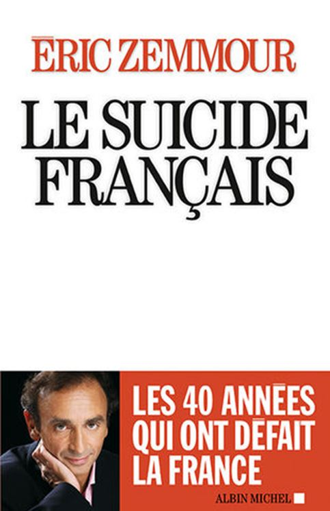

Éric Zemmour nous livre la suite de ses chroniques matinales, l’année 2011 sur RTL, dans Le bûcher des vaniteux, éditions Albin Michel.
La cuvée 2011 est encore meilleure que celle de l’année précédente. De plus, cette fois, elles sont datées, le lecteur s’y repère un peu mieux. Comme les chroniques antérieures, celles-ci suivent l’actualité immédiate ou décortiquent un sujet de société dans une brève critique. Les formules sont toujours aussi plaisantes, incisives, les mots acides, les comparaisons osées mais souvent justes dans des analyses tranchantes et pertinentes. En fin connaisseur de l’Histoire, l’auteur compare souvent les mouvements des capitales arabes du fameux printemps au mouvement qui embrasa les capitales européennes en 1848. Ça a aussi très mal fini.
Le style de l’émission l’oblige à des formules lapidaires, peu importe, il a le don :
« Quand les irlandais votèrent non au référendum européen, on les a fait recommencer jusqu’à ce qu’ils votent bien. Quand les français (et les hollandais) ont fait de même en 2005, on a ignoré leur décision, soi-disant souveraine pour faire ratifier ce qu’ils ont refusé par les parlementaires. [...] ...les dirigeants européens et les élites européistes sont schizophrènes : ils proclament partout leur amour de la démocratie, l’imposent parfois par la guerre, mais l’évitent avec soin pour leur projet historique le plus cher. » p.265/266
Ainsi sont nos politiques, ils n’ont que le mot démocratie à la bouche, mais c’est pour la vomir. Les pays dans lesquels nous sommes intervenus par la guerre pour apporter la démocratie ne se comptent plus sur les doigts d’une main !
Éric Zemmour est un journaliste tout à fait incorrect : l’euro n’est pas la panacée universelle, nos politiques sont des calculateurs égoïstes souvent doublés de trouillards, quand ils ne sont pas tout simplement des imbéciles. Comment lui donner tort ? L’immigration massive, selon lui, n’est pas une chance pour la France. Marine Le Pen n’est pas le diable et il n’est pas un anticommuniste viscéral. Je ne suis jamais arrivé à le situer politiquement. C’est un journaliste politique lucide qui ouvre sa gueule, cela pourra-t-il durer ? Peut-être est-il aussi prophète, car il écrit, page 11 : « Je suis en sursis. »
LE SUICIDE FRANÇAIS
Le suicide Français, éd. Albin Michel est-il un essai de sociologie, un livre d’histoire, un manuel pratique ou un livre politique ? S’il fallait à toutes forces ranger l’ouvrage dans une catégorie, il faudrait le classer dans la catégorie des Sommes. Car c’est une somme politique des quarante dernières années que nous propose Éric Zemmour. Utilisant tour à tour les événements historiques, les dates et la symbolique qui leur est attachée, l’auteur repère et utilise les signifiants qui se sont inscrits.
L’ouvrage est volumineux, 534 pages, pas une seule n’est de trop. dans l’époque et l’ont façonnée. En cheminant le long de ces quarante années on découvre ou redécouvre qui et comment, par décrets, par paroles, par actions et par omissions a conduit la France dans l’état d’agonie où elle se trouve aujourd’hui.
Personne n’est épargné, mais il ne s’agit pas de dénonciations calomnieuses, de haines ou de stigmatisations comme le prétendent les détracteurs de l’ouvrage et de l’auteur. Il s’agit simplement d’un constat lucide d’historien et de politique, de journaliste qui parle sans la langue de bois à laquelle la profession nous a tant habitués !
L’ouvrage s’ouvre sur 1970 avec la mort de de Gaulle et se clôt en 2007 sur la signature du Traité de Lisbonne. Entre les dates fatidiques qui ont envoyé la France au cimetière des éléphants (Loi du 3 janvier 73, traité de Maastricht et de Lisbonne etc.) l’auteur dresse un portrait au vitriol de nos dirigeants, des « élites » culturelles et du monde politique. Ces courtes biographies concernent entres autres BHL, Louis Schweitzer, Villepin, Bové, R. Descoings, Coluche, Jean-Claude Trichet, qui après avoir été gouverneur de la Banque de France eut en charge les destinées de la BCE (Banque Centrale Européenne) et y prononça dès son arrivée ces mots sublimes : « I’m not French ! »
Des rappels utiles et nécessaires aussi, tel que l’Appel de Cochin de Jacques Chirac, reproduit dans son intégralité. (p.165) Ce dernier se rétracta, prétextant qu’il avait subi la mauvaise influence de Marie-France Garaud, qui était une des co-auteurs du texte. Cette dernière lui dira plus tard :
« Je vous croyais du marbre dont on fait les statues ; vous n’êtes que de la faïence dont on fait les bidets. » (p.380)
Un autre rappel, l’affaire de Bruay-en-Artois quand La Cause du Peuple écrivait en ses pages :
« Un notaire qui mange des steaks d’une livre quand les ouvriers crèvent la faim ne peut être qu’un assassin d’enfant. »
Ça c’est du grand journalisme fouillé, de la psychanalyse des profondeurs ! On y apprend qu’un chef anonyme du nom de Marc tirait les ficelles (très grosses !) et que ce Marc avait pour nom Serge July (p.54.) Ce dernier dirigea le journal Libération de 1973 à 2006.
Zemmour a le sens de la formule lapidaire qui n’épargne personne :
« Nous vivons dans une ère carnavalesque. Nicolas Sarkozy fut un Bonaparte de carnaval ; François Hollande est un Mitterrand de carnaval et Manuel Valls, un Clémenceau de carnaval. » (p.518)
Non seulement les formules sont brèves et parlantes, mais l’écriture est soignée, les paragraphes sont pleins, les chapitres déliés, le langage y est clair et concis. À propos de la charité organisée du genre resto du cœur qui remplaça le militantisme ouvrier il emploie ce parallèle, hélas vrai :
« Les jeunes lanceurs de pavés vieillissaient en dames d’œuvre de la fin du XIXᵉ siècle qui se rendaient dans les usines pour s’occuper des jeunes filles pauvres de la classe ouvrière. » p.276
Bien sur, l’Europe n’est pas à la fête, surtout l’Europe des régions dont on nous rebat les oreilles et qu’on nous présente toujours comme un plus de démocratie. Zemmour, n’étant pas égoïste, laisse quelques bons mots à ceux qui y étaient opposés, notamment Pompidou :
« Il y a eu déjà l’Europe des régions ; ça s’appelait le Moyen âge ; ça s’appelait la féodalité. » p.226
C’est sous l’immense statue de de Gaulle que parle Zemmour, car il faut bien parler de quelque part. Aux vues du tollé et de l’hallali qui ont suivi la sortie de son livre, on ne peut que se dire que c’était là une sage précaution. Il a vite été accusé, par les bienpensants gorgés d’ignorance, sur les plateaux de télévision et dans la presse écrite de « réhabiliter » Vichy. Pas moins. Vichy est une part de l’Histoire de France, avec ses conflits de personnes, d’idées et d’intérêts. Le simple fait de le dire peut dans le meilleur des cas vous faire mettre à l’index, dans le pire vous conduire devant un tribunal, car l’histoire de cette période est un tabou et la bienpensance aime les tabous ; elle s’en construit chaque jour de nouveaux. Comme ce n’est pas la majeure partie de l’ouvrage, on citera un court passage sur un fait que beaucoup de gens ignorent, et pour cause : Pétain ne doit être que la tâche indélébile de l’occupation.
« Paxton avait relevé le refus de Pétain que les juifs portent l’étoile jaune en zone libre ; Michel s’étonne, faussement naïf, qu’on ne lui en sache pas gré alors qu’on rend un éternel hommage au roi du Danemark. » (p.91)
Le Suicide Français est un trésor inépuisable plein de petites perles, on y apprend par exemple que le décret de 1973 sur le regroupement familial fut suspendu par un décret en 1976, mais le décret de 1976 fut ... annulé par le Conseil d’État ! p.143
Après tout pourquoi ne pas s’abriter à l’ombre de la statue de de Gaulle comme le fait É. Zemmour ? Non seulement il fut le plus Grand Homme français du XXᵉ siècle, c’est avec un caractère ombrageux qu’il mena une politique étrangère pas toujours très claire -particulièrement l’affaire algérienne- mais sa politique étrangère visa toujours la grandeur et l’indépendance de la France. Par ailleurs, il eut des gestes chevaleresques qu’aucun homme politique n’aurait aujourd’hui vis-à-vis de ses adversaires : en 1965, pendant la campagne électorale, de Gaulle refusa de rendre publique la fameuse photographie de Mitterrand où ce dernier reçoit la francisque par le Maréchal Pétain. (p.381)
Un livre d’histoire sur les quarante années charnières qui ont bousillé la France, un livre bourré de pépites dans lequel sont analysés avec ironie mais méticulosité symboles et signifiants qui ont façonné notre époque ; un livre qui de plus est bien écrit par une plume taquine et pleine de panache, ça se lit ! Surtout qu’on ne s’aperçoit même pas qu’il y a un oubli majeur et abyssal concernant les phénomènes sociétaux : ces derniers sont généralement élaborés et longuement discutés en conclaves fermés chez les humanistes supérieurs. Zemmour n’en dit mot, mais ce n’était pas son but et c’est de peu d’importance, on ne peut pas se mettre tout le monde à dos ! L’ouvrage se termine sur ces froides paroles :
« La France se meurt, la France est morte » (p.527)
À lire lors d’une longue veillée funèbre.
UN QUINQUENNAT POUR RIEN
Le dernier ouvrage d’Éric Zemmour, « Un quinquennat pour rien » , éd. Albin Michel s’inscrit dans la droite ligne de ses ouvrages antérieurs : l’impression sous forme de livres de ses chroniques matinales sur RTL.
Ces chroniques intitulées « On n’est pas forcément d’accord » sur les antennes ont été rebaptisées : « Chroniques de la guerre de civilisation ». Elles s‘étalent du 8 janvier 2013 au 6 juillet 2016 et sont précédées, dans l’ouvrage, d’un texte intitulé : « La France au défi de l’Islam. » La parution de livres dénonçant l’islamisation de nos banlieues et aujourd’hui également de nos campagnes, devient hebdomadaire : à chaque semaine son ouvrage mettant en garde, avertissant, dénonçant. Mais comme l’écrivait l’auteur des chroniques dans son dernier ouvrage : « La France est morte ».
Zemmour n’est pas qu’un polémiste, il est aussi un analyste politique très fin qui puise dans l’histoire les outils de ses analyses.
« La France a dévoilé les femmes musulmanes. Elle a instauré l’État-nation bureaucratique dans une oumma qui vivait encore sous l’héritage féodal de l’empire Ottoman. Ces révolutions politiques administratives et sociologiques entrainèrent la création d’État-nations à la Française, Syrie, Liban Irak, Égypte et la disparition du Califat en 1924, décidé par Atatürk, au nom de la modernisation de la Turquie. Le traumatisme fut tel que dès 1928, les Frères musulmans furent fondés avec comme objectif historique de le rétablir. » p.21
Selon Zemmour, un plan de reconquête des territoires perdus de la République existe déjà :
« Le plan est déjà dans les cartons, il a pour nom « Opération ronces ». Il a été mis au point avec l’aide de spécialistes de l’armée israélienne qui ont transmis à leurs collègues français leur expérience de Gaza. La comparaison vaut tous les discours. » p.36
Sur plus des 500 pages de l’ouvrage, l’auteur analyse l’actualité française et internationale sous forme de petit discours de 3 à 4 minutes ; c’est rapide, incisif, bref et concis. Jouant le plus souvent sur le mode ironique, chacune de ses chroniques est datée et porte un titre. Elles sont parfois mordantes, humoristiques et souvent très subtiles. À la rubrique du 25 janvier 2013, intitulée « Perfide Albion » Zemmour, parlant du couple franco-allemand, cite Oscar Wilde, auteur qu’il semble apprécier :
« Un couple, disait Oscar Wilde, c’est quand deux personnes ne font qu’un. Mais lequel ? »
Et Zemmour de rajouter : « Oscar Wilde était anglais évidemment ! » p.59
Les petits détails de l’actualité sont percés à jour le long de ces chroniques, mais également des explications sur les situations internationales, de petits morceaux de pédagogie où la parole est libre et où en quelques lignes de vulgarisation l’auteur explique ce qui se passe pas très loin de la France et dont les médias majoritaires ne parlent pas :
« Car il y a deux Ukraine. L’une à l’ouest près de la frontière avec la Pologne, autour de la capitale historique, Kiev, rêve d’Europe pour sortir de la pauvreté et de la corruption endémique de son système économique et politique. Une Ukraine de l’ouest qui aimerait s’arrimer à l’Europe et à l’OTAN pour s’émanciper d’une emprise russe séculaire. Mais il y a aussi une Ukraine de l’Est, où vit une minorité russophone importante. Ceux-là se sentent proches de leurs alliés et anciens maîtres russes. [...] Ces deux Ukraine se font face depuis la chute de l’Union Soviétique. Elles se sont succédé au pouvoir. On se demande parfois combien de temps elles pourront rester ensemble au sein de la même nation. » p.176
L’Ukraine et son sort intéressent beaucoup Éric Zemmour. Dans cet ouvrage il y revient à plusieurs reprises, notamment dans sa chronique du 24 février 2015, y consacrant pas moins de deux pages percutantes que ne renieraient pas les « indépendantistes » du Donbass.
À plusieurs reprises dans ses émissions de télé ou ses passages sur les ondes, Zemmour a déclaré qu’il était déçu que Vladimir Poutine ne reçoive pas le Prix Nobel de la Paix. Il lui consacre sa chronique du 20 décembre 2013 intitulé « L’homme de l’année » :
« Il finit l’année en fanfare en graciant l’oligarque Khodorkovski, les Pussy Riot et même les activistes de Greenpeace. C’est Noël et la trêve olympique à la fois. Comme pour rappeler que Poutine fut le seul à oser donner l’asile politique à Snowden, l’homme qui révéla la folle réalité de l’espionnage américain. Mais cette année restera avant tout celle où le Chef de l’État russe est sortit vainqueur du grand bras de fer diplomatique autour de la Syrie. » p.180
Bien évidemment l’humour cynique qu’il déploie à longueur d’émission ou d’ouvrage n’est pas oublié dans le dernier opus du journaliste polémiste :
« Le pire n’est pas toujours sûr. Il est seulement fréquent. » p.319
Lucide et toujours freudien, Zemmour n’hésite pas à aller contre la morale du jour, à rentrer dans le lard de la bienpensance même en ce qui concerne les mœurs :
« La violence dans les jeux sexuels est aussi vieille que l’humanité, mais notre époque arrogante a décidé que cela n’était acceptable que dans un cadre égalitaire qui justement le nie et même l’interdit. C’est le contrat social de Rousseau pour les relations amoureuses. » p. 331
L’auteur du « Suicide français » finirait presque par lasser tellement ses constatations sont évidentes. Ce qui continue à le rendre percutant, à faire de lui un continuel lanceur d’alerte, pour reprendre un terme à la mode, c’est l’art raisonné de la comparaison qu’il déploie tout au long de ses écrits et de ses interventions :
« En dix ans l’armée de terre a perdu quarante cinq mille hommes. Elle arrive aujourd’hui à un seuil de cent mille hommes. Seuil symbolique : cent mille hommes en armes, c’est ce qu’avait laissé Hitler à Vichy. En 1918, le traité de Versailles avait aussi limité les effectifs de l’armée allemande à cent mille hommes. À l’époque on disait que c’était tout juste suffisant pour assurer la paix intérieure. » p.362
Aujourd’hui, ça ne l’est plus : les attentats fleurissent malgré cet effectif...
Bien avant qu’il ne soit candidat à la présidentielle, Zemmour avait tout à fait perçu ce qu’est Emmanuel Macron :
« Sonnez trompettes de la renommée : le banquier d’affaire fait sa mue de grand serviteur de l’État, à la manière d’un Georges Pompidou naguère. Mais Macron est à Pompidou ce que le pistolet à bouchon est au lance-roquettes. [....] Mais un caractère et une légitime haute idée de soi ne font pas une vision. Et la panique devant les plans sociaux qui s’accumulent alors que se rapproche la présidentielle de 2017 ne fait pas une politique industrielle. » p.371
Et encore :
« Il a laissé dévorer Alstom par les américains, Alcatel par les finlandais, Lafarge par les suisses. Au suivant ! » p.372
Toujours aussi féru d’Histoire, Zemmour nous régale de la bêtise de la gauche française, ignorante jusqu’au masochisme et à l’autodestruction :
« Jean-Christophe Cambadélis propose de rassembler une gauche éparse dans ce qu’il a appelé « La Belle Alliance populaire ». La Belle Alliance, c’est l’endroit où se sont retrouvés l’Anglais Wellington et le Prussien Blücher après avoir mis en déroute l’armée française. C’était il y a deux siècles à Waterloo. La gauche ne pouvait pas trouver nom mieux adapté à son destin. » p.404
Dans sa chronique du 8 octobre 2015 intitulée Éloge de la violence, Zemmour y va d’une piqûre de rappel concernant l’État socialiste, qui n’a rien à envier à l’État sarkosyste en matière de trahison au profit du Qatar :
« Violence de l’État actionnaire qui livrait il y a quelques mois seulement à Qatar Airways des créneaux dans les aéroports français en échange de la vente de Rafale aux Qataris. Ce qui contraindra Air France à réduire ses vols. Et le retrait d’un seul avion long courrier de la flotte entraîne la suppression de trois cents emplois. » p.418
Bien évidemment le polémiste n’épargne pas le pape actuel qui devrait être la honte de tout chrétien censé. Le pape François visitant des réfugiés à Lesbos rapporta dans son avion une famille de réfugiés ...musulmans et non pas chrétienne ! Chrétiens qui souffrent la mort de la part des musulmans, mais il le fait avec une douceur enrobée d’acide :
« Le pape nous explique, non sans une pointe d’ironie, que les familles chrétiennes qu’on lui a présentées n’avaient pas leurs papiers en règle. On ne savait pas la miséricorde divine si procédurière. » p. 490
Et ça fuse comme ça tout au long de l’ouvrage. Ouvrage qu’au départ je ne voulais pas acheter, payer deux fois les chroniques de l’émission « On n’est pas forcément d’accord » me semblait s’apparenter à du gaspillage, j’ai gaspillé et je ne le regrette pas ! À lire sans modération, aucune !

Partager cette page